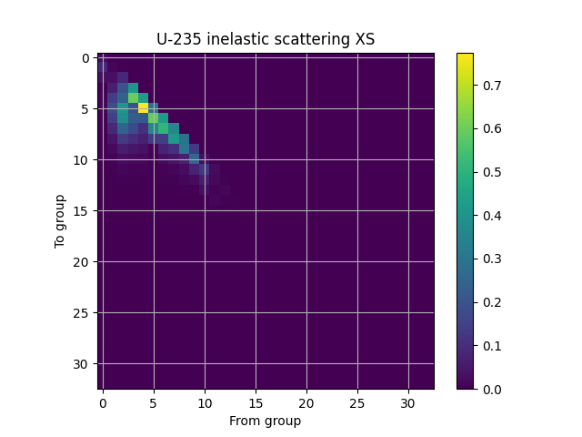
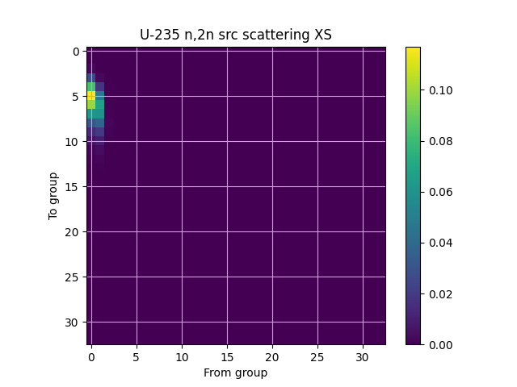

Note
Go to the end to download the full example code
Plotting a multi-group scatter matrix.
Here we plot scatter matrices from an ISOTXS microscopic cross section library. We plot the inelastic scatter cross section of U235 as well as the (n,2n) source matrix.
See Also: ISOTXS format.
- 
- 
import matplotlib.pyplot as plt
from armi import configure
from armi.nuclearDataIO import xsNuclides
from armi.nuclearDataIO.cccc import isotxs
from armi.tests import ISOAA_PATH
configure(permissive=True)
lib = isotxs.readBinary(ISOAA_PATH)
u235 = lib.getNuclide("U235", "AA")
xsNuclides.plotScatterMatrix(u235.micros.inelasticScatter, "U-235 inelastic")
plt.figure()
xsNuclides.plotScatterMatrix(u235.micros.n2nScatter, "U-235 n,2n src")
Total running time of the script: ( 0 minutes 0.226 seconds)